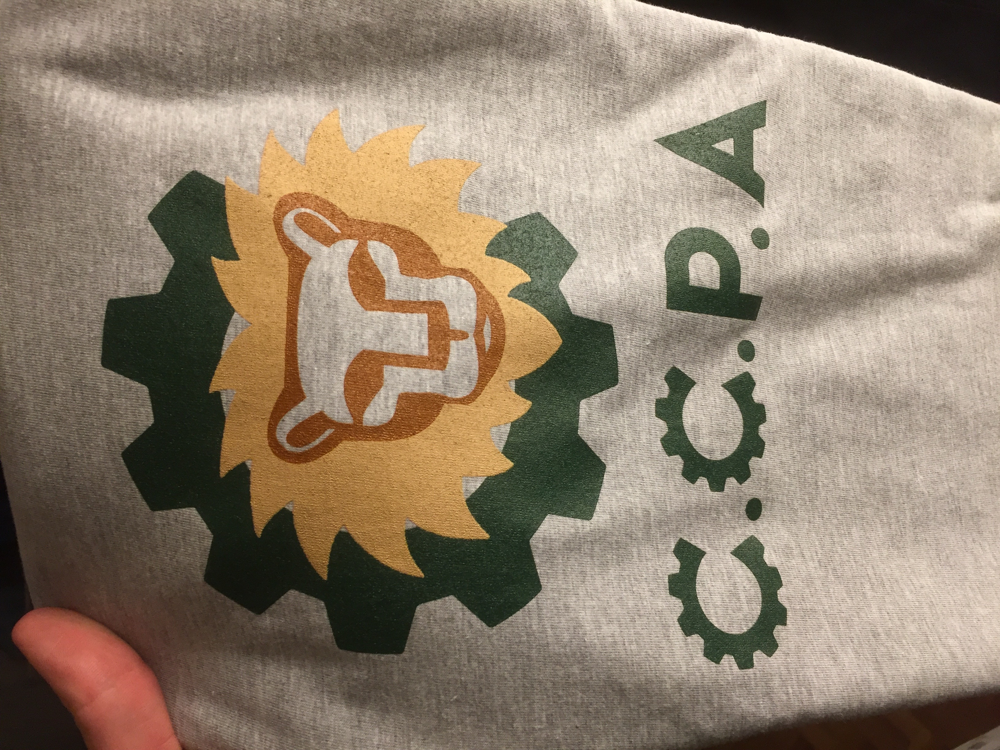

After taking a break during COVID, CCPA's competitive Robotics team is back in action!
In 2022, the team will compete against other clubs in the FIRST Tech Challenge, which includes students around the world from grades 7-12.
This activity is open for a limited number of D2 students, beginning in October 2022. Robotics takes place during D2 club time on Fridays.
To join, ask Mx. Brassey or your advisor to add you to this club, or complete this Google Form.
